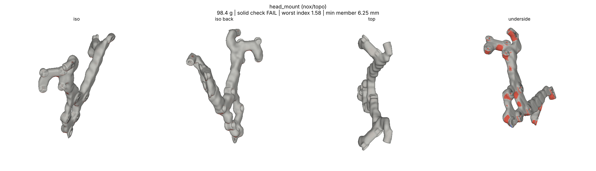
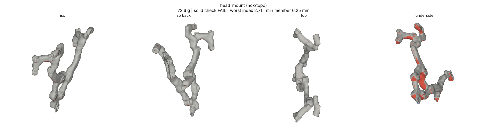
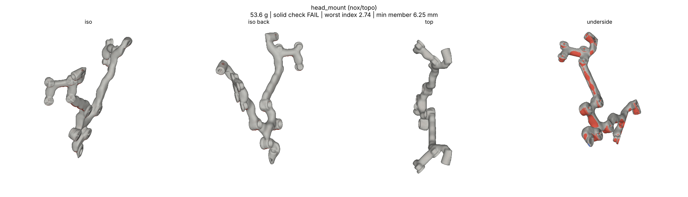

<title>Head Mount Sizing Runs</title>
<style>
:root{--bg:#f6f7f8;--fg:#1d2329;--muted:#5d6872;--line:#d6dbe0}
@media (prefers-color-scheme:dark){:root:not([data-theme="light"]){--bg:#14181c;--fg:#e4e8ec;--muted:#9aa5ae;--line:#2c343b;color-scheme:dark}}
:root[data-theme="dark"]{--bg:#14181c;--fg:#e4e8ec;--muted:#9aa5ae;--line:#2c343b;color-scheme:dark}
body{background:var(--bg);color:var(--fg);font-family:system-ui,sans-serif;line-height:1.5;padding:24px 16px 48px}
main{max-width:1100px;margin:0 auto;display:grid;gap:14px}
h1{font-size:1.6rem;margin:0} p{margin:0;max-width:72ch;color:var(--muted)}
figure{margin:0;background:#fff;border:1px solid var(--line);border-radius:6px;overflow-x:auto}
img{display:block;width:100%;min-width:760px} figcaption{font-size:.85rem;color:var(--muted);padding:6px 12px;background:var(--bg)}
</style>
<main>
<h1>Sensor head on 3 rods: first sizing runs</h1>
<p>Three coarse topology runs (h 4) of the 3-rod head. None passes yet: the strength index is over 1 and the solid check finds a thin wall. Both causes are in the setup, not the material amount, and both are being fixed before the next runs.</p>
<p>1. The centre rod's socket was the only support, so all of the head's crash load went through it (peak beside it every time). In the drone the three rods share it. Next run: all three sockets hold the head.<br>2. The side sockets' bosses touch the camera-view keep-out, which leaves a 1.2 to 1.4 mm wall at the top corners. Next run: the side sockets move out of the camera views.</p>
<figure><figcaption>60 cm³: 98.4 g, worst index 1.58 (beside the centre socket).</figcaption></figure>
<figure><figcaption>40 cm³: 72.6 g, worst 2.71.</figcaption></figure>
<figure><figcaption>25 cm³: 53.6 g, worst 2.74.</figcaption></figure>
</main>
